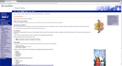
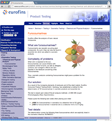

Introduction
This page documents the product page templates proposed by Astuanax to enhance the website for Eurofins Product testing.
We created 2 templates to match different versions of PDF documents provided by Eurofins. Both templates can be implemented and parts of each template can be used wherever necessary
Features of the templates
The idea was to match the design of the current website stylesheets and the styles provided in the PDF documents which include different colors, and font-sizes.
The website template for www.eurofins.com is based on a fluid design which tries to adapt to the screen-sizes of the person viewing the website (last month there were 3519 different screensize recorded for the Eurofins Product testing website).
To accomodate for these changes, we opted for a combination of CSS styles and Javascript. The position and size of the images will be changed according to the screensize so that they respond to the settings of the visitor (responsive images).
Template 1
The following styles are available in template 1:
- Introduction
Large point text, optional responsive image. - Header 2, 3 ,4
All header will be changed to the Eurofins blue. - List with images
Basic list with orange dot, optional responsive image. - One e-mail footer Redesigned the footer to match the styles and colors of the PDF documents.
{kind=link}
Template 2
The following styles are available in template 2:
- Introduction
Large point text, optional responsive image. - Banner
Succession of images, glued together as a banner. - Header 2, 3 ,4
All header will be chnged to the Eurofins blue. - Column based lists
Lists can be put into 2 columns with an optional responsive image. - List with images
Basic list with orange dot, optional responsive image. - Footer with country specific addresses Redesigned the footer to match the styles and colors of the PDF documents.
{kind=link}
{kind=link}
Features
Responsive Images
The images loaded on the current Eurofins website are static, and have a fixed size. The design is based on the concept of a fluid framework, one that adjusts to the screensize of the visitor,
which can result in the examples below
(screensize taken from real visitors, data extracted from Google Analytics for Eurofins Product Testing ).
|  |  |
Each image will be resized according to the screen-size of the visitor, with a minimum and maximum size, while keeping the constraints of the image (portrait or landscape). I think that a small screencast will provide a better example: